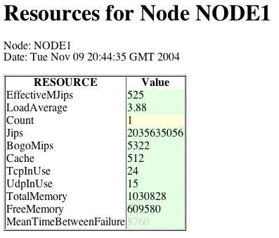

<!DOCTYPE HTML PUBLIC "-//W3C//DTD HTML 4.0 Transitional//EN"
"http://www.w3.org/TR/REC-html40/loose.dtd">

<html> <head>
<title><Node Resources Servlet/title>
</head>

<body>

<p>
<table>
  <caption align=bottom><i>Node Resources Servlet</i></caption>
  <tr><td>
      
  </td></tr>
</table>
<p>
    <dl>
      <dt><b>EffectiveMJips</b></dt> 
      <dd>Effective CPU that one thread will experience. This is a
	model of the Linux CPU scheduling algorithm. The model takes
	into account the number of CPUs, MJIPS for each CPUs, and the
	load average of the host. </dd>
      <dt><b>Load Average</b></dt> 
      <dd>Host Load Average is the number of processes running in
	Host.  </dd>
      <dt><b>Count</b></dt> 
      <dd>Number of Processors </dd>
      <dt><b>TCP In Use</b></dt> 
      <dd>The number of TCP Sockets</dd>
      <dt><b>UDP In Use</b></dt> 
      <dd>The number of UDP Sockets</dd>
      <dt><b>Total Memory</b></dt> 
      <dd>Host Memory </dd>
      <dt><b>Free Memory</b></dt> 
      <dd> </dd>
      <dt><b>Cache</b></dt> 
      <dd>Size of a CPU's level 2 cache</dd>
    </dl>


</body> </html>
